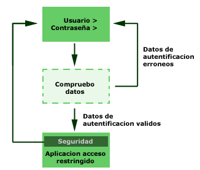

Un sistema de Autentificación en PHP
Funcionamiento del sistema de autentificaci�n
en PHP
Un sistema de autentificaci�n es un m�dulo de seguridad
para asegurarnos de que el usuario que visita las p�ginas es quien dice ser. Por
supuesto, sabiendo que ese usuario es conocido, podremos darle acceso a m�s
aspectos de la p�gina que si fuese un usuario desconocido. Pero supongo que, si
est�s leyendo este art�culo, ya conocer�s lo que es un sistema de
autentificaci�n y lo que deseas hacer es crear uno para tus p�ginas.
Esquema de un sistema de
autentificaci�n 
(Ejecucion) (Pincha en los modulos del grafico para ver el codigo PHP de cada uno)
Vamos a empezar por definir un diagrama para
realizar la autentificaci�n de usuario en unas p�ginas web, que nos servir� para
programar luego las p�ginas ajust�ndose al diagrama.
En la imagen anterior podemos ver el diagrama, que
empieza por la p�gina donde se pide un usuario y contrase�a para acceder a la
aplicaci�n de acceso restringido.
Los datos de autentificaci�n (usuario
y contrase�a escritos en la p�gina inicial) se env�an a la p�gina dibujada con
l�nea de puntos, que se encarga de hacer una comprobaci�n de dichos datos del
usuario. Seg�n los datos de autentificaci�n, se redirecciona al navegador a la
p�gina de la aplicaci�n restringida, en caso de que sean correctos, o a la
p�gina donde volver a escribir el usuario/contrase�a, en caso de que sean
incorrectos. Esta p�gina la he dibujado con l�nea de puntos porque no es una
p�gina donde se pare el navegador para nada, sino que s�lo es una p�gina de paso
que redirecciona a un sitio u otro dependiendo de los datos que reciba.
La aplicaci�n de acceso restringido, aparte de mostrar las
funcionalidades que quer�amos proteger con usuario contrase�a, debe de realizar
unas comprobaciones de seguridad para saber si se ha pasado con �xito el proceso
de autentificaci�n o si se est� intentando acceder de manera no permitida a esa
p�gina. Esta comprobaci�n la he dibujado como una capa con color verde m�s
oscuro sobre la p�gina de la aplicaci�n. Si no se satisface dicha comprobaci�n
(el usuario no se ha autentificado correctamente) se vuelve a la p�gina donde
escribir el usuario y la contrase�a.
Este es el esquema b�sico, que
espero que se entienda bien. Ahora, veamos algunas preguntas que podr�a hacerse
el lector.
�Por qu� hacemos esta comprobaci�n de seguridad dentro de
la aplicaci�n?
Podr�a ser que alguien conociese la URL de la aplicaci�n
de acceso restringido y la escribiese directamente sobre la barra de direcciones
del explorador, as� que hacemos esta comprobaci�n para saber que realmente no se
est� accediendo sin pasar por la p�gina que comprueba si el usuario/contrase�a
es correcto
�C�mo sabemos que ciertamente se ha pasado por la p�gina
que comprueba los datos de autentificaci�n?
Esta comprobaci�n la
podr�amos hacer de varias maneras, as� pues, depende de nuestro script de
autentificaci�n y el nivel de seguridad que tratemos de implementar. Un ejemplo
simple podr�a ser crear una variable de sesi�n en la p�gina que comprueba los
datos, si es que eran correctos, y en capa se seguridad de las p�ginas de acceso
restringido comprobar�amos si esa sesi�n est� o no definida.
�C�mo
pueden entrar a esa p�gina si no hay enlaces directos y para pasar a ella
necesitamos que nos redireccione la p�gina de comprobaci�n del
usuario/contrase�a?
Pues de diversas maneras, para empezar, el historial
de los ordenadores guarda las URL a las que se ha accedido y cualquier persona
podr�a recuperar la URL de nuestra aplicaci�n con acceso restringido. Tambi�n se
podr�a probar distintas URL que podr�amos imaginarnos como posibles para la
aplicaci�n y esperar a acertar con el nombre de archivo en alg�n momento,
incluso esta tarea se la podr�amos encomendar a un programa para realizar muchas
m�s pruebas. En cualquier caso, nuestra seguridad no se puede quedar en
simplemente que los posibles intrusos no conozcan la direcci�n de la p�gina.
P�gina inicial con el formulario de autentificaci�n en
PHP
Vamos a realizar la p�gina inicial, que tiene el
formulario de autentificaci�n en el que el visitante deber�a rellenar con su
usuario y contrase�a. Como es la p�gina inicial, la llamaremos index.php, que es
el documento por defecto configurado en nuestro servidor.
Para realizar
esta p�gina, utilizaremos HTML b�sico, excepto en una comprobaci�n que nos
permitir� saber si se accede al formulario de nuevo por no haber introducido
correctamente el usuario y contrase�a, pues, en ese caso, habr�a que mostrar un
cartelito informando que el usuario o la contrase�a no son v�lidos.
Para
pasar a la p�gina inicial el mensaje de que el usuario/contrase�a introducidos
no son v�lidos utilizaremos una variable pasada a trav�s de la URL. La
llamaremos errorusuario, y si contiene la cadena "si" es que estamos recibiendo
un error.
El c�digo ser�a el siguiente:
<html>
<head>
<title>Autentificaci�n
PHP</title>
</head>
<body>
<h1>Autentificaci�n PHP</h1>
<form action="control.php"
method="POST">
<table align="center" width="225" cellspacing="2"
cellpadding="2" border="0">
<tr>
<td colspan="2"
align="center"
<?if ($_GET["errorusuario"]=="si"){?>
bgcolor=red><span style="color:ffffff"><b>Datos
incorrectos</b></span>
<?}else{?>
bgcolor=#cccccc>Introduce tu clave de acceso
<?}?></td>
</tr>
<tr>
<td align="right">USER:</td>
<td><input type="Text" name="usuario" size="8"
maxlength="50"></td>
</tr>
<tr>
<td
align="right">PASSWD:</td>
<td><input type="password"
name="contrasena" size="8" maxlength="50"></td>
</tr>
<tr>
<td colspan="2" align="center"><input type="Submit"
value="ENTRAR"></td>
</tr>
</table>
</form>
</body>
</html>
| Nota: La variable errorusuario, recibida por la URL y que informa si se produjo un error anterior al introducir usuario y contrase�a, se est� recogiendo por mediaci�n del array asociativo $_GET, que guarda todas las variables enviadas por la URL. |
El formulario tiene el atributo action dirigido
hacia la p�gina "control.php", que es la que se encarga de recoger los datos y
ver si son correctos. Ser� tratada en el pr�ximo cap�tulo.
Control de los datos de autentificaci�n en
PHP
Esta p�gina ser� encargada de decidir si los datos de
configuraci�n son correctos y actuar en consecuencia. Dependiendo del nivel de
seguridad que queramos aplicar a nuestra aplicaci�n, esta p�gina ser� m�s o
menos complicada.
En un principio no deseo liar mucho las cosas, as� que
explicar� una versi�n muy reducida de este archivo de control, en la que se
comprueba si el usuario y contrase�a sean dos valores espec�ficos. Esto tiene la
desventaja que s�lo podemos crear un usuario/contrase�a distinto y no un sistema
que permita muchos usuarios distintos. Bueno, en realidad si que permitir� que
accedan muchos usuarios a la vez, pero utilizando todos el mismo nombre de
usuario y contrase�a.
En aplicaciones m�s avanzadas podr�amos tener en
una base de datos una lista de usuarios con sus contrase�as. Entonces, en este
archivo de control deber�amos hacer una b�squeda para ver si existe una
correspondencia en la base de datos de ese usuario con esa contrase�a. Esto lo
veremos en adelante, ahora nos quedamos con la versi�n reducida.
Despu�s
de la comprobaci�n podr�n pasar dos cosas:
Si los datos son correctos,
definir� una variables de sesi�n que servir� para saber que ese visitante ha
sido validado correctamente y tiene permiso para acceder a la aplicaci�n. Adem�s
redireccionar� al visitante a la p�gina de la aplicaci�n restringida.
Si el
usuario/contrase�a no era correcto, se env�a al navegador a la p�gina de inicio
pasando la variable errorusuario=si, que indica que ha habido un error en la
autentificaci�n.
El c�digo se puede ver a continuaci�n:
<?
//vemos si el usuario y contrase�a es v�ildo
if
($_POST["usuario"]=="usuario" && $_POST["contrasena"]=="password"){
//usuario y contrase�a v�lidos
//defino una sesion y guardo datos
session_start();
session_register("autentificado");
$autentificado = "SI";
header ("Location:
aplicacion.php");
}else {
//si no existe le mando
otra vez a la portada
header("Location:
index.php?errorusuario=si");
}
?>
| Referencia: Dos enlaces a documentaci�n relacionada en nuestro manual de Programaci�n en PHP: |
Capa de seguridad en PHP
Este archivo,
en nuestro caso llamado seguridad.php, se encargar� de dotar seguridad a toda la
aplicaci�n de acceso restringido. La t�cnica que vamos a utilizar es incluirlo
al principio de todas las p�ginas que queramos que permitan un acceso
restringido.
El m�dulo de seguridad, incluido al principio de cada
archivo, realizar� las comprobaciones oportunas y actuar� permitiendo ver el
archivo o denegando su visualizaci�n dependiendo de dichas comprobaciones.
Dependiendo del nivel de seguridad que deseemos implementar, la creaci�n
de este archivo puede ser m�s o menos complicada. Como no deseo complicar en un
principio los scripts, esta versi�n resultar� bastante sencilla.
Lo
�nico que har� ser� recuperar la variable de sesi�n donde guardo si ese usuario
ha sido autentificado o no. Luego se comprueba esa variable para saber si se ha
autentificado el usuario o no, realizando estas acciones:
Si no se hab�a
autentificado, redirijo al navegador a la p�gina que tiene el formulario de
autentificaci�n. Adem�s, salgo del script PHP, con lo que la p�gina deja de
ejecutarse y el resto no se ver�. S�lo se mandar� al navegador la redirecci�n
con lo que el navegador se mover� la formulario y ser� imposible ver nada en la
p�gina segura.
Si se hab�a autentificado, no hago nada. Ni tan siquiera
trato este caso, de modo que se seguir�a ejecutando la p�gina con el contenido
que correspondiese. No hay que olvidar que este archivo de seguridad se va a
ejecutar como un include al principio de todos los archivos de la aplicaci�n
restringida, lo que significa que, si no se hace nada, se seguir�a mostrando la
p�gina donde este archivo est� incluido.
El c�digo se puede ver a
continuaci�n:
<?
//TOMO VARIABLES DE SESION
SOBRE LA AUTENTIFICACION
session_register("autentificado");
//COMPRUEBA
QUE EL USUARIO ESTA AUTENTIFICADO
if ($autentificado != "SI") {
//Si autntificado es distinto de "SI", envio a la p�gina de autentificacion y no ejecuto mas del archivo .php
header("Location: index.php");
//ademas salgo de este script
exit();
}
?>
Archivos de la aplicaci�n con acceso restringido en PHP
La aplicaci�n con acceso restringido se realizar� como
cualquier otra aplicaci�n de PHP, con la salvedad de que, a todos los archivos
que queramos proteger, habr� que incluirles al principio la capa de seguridad,
representada por el archivo seguridad.php.
Como dec�a, todo en el
archivo de la aplicaci�n se realizar� como cualquier otro archivo de PHP, es
decir, con s�lo incluir el m�dulo de seguridad, el archivo ya tendr� el acceso
restringido y todo lo dem�s lo haremos de manera transparente a este estado de
seguridad.
El c�digo de una p�gina segura ser�a el siguiente:
<?include ("seguridad.php");?>
<html>
<head>
<title>Aplicaci�n segura</title>
</head>
<body>
<h1>Si est�s aqu� es que te has
autentificado</h1>
<br>
----
<br>
Aplicaci�n
segura
<br>
----
<br>
<br>
<a
href="salir.php">Salir</a>
</body>
</html>
| Importante: El include del archivo seguridad.php se ha de realizar en la primera l�nea del archivo PHP de la aplicaci�n. Si no lo hacemos en la primera l�nea o si escribimos texto en la p�gina antes de incluir la capa de seguridad, el script podr�a fallar y hacer que no funcione la aplicaci�n o que sea menos segura. Este efecto se produce porque no se puede escribir en la p�gina nada si se desea hacer una redirecci�n con PHP (funci�n header) y si se escribe algo, la redirecci�n no podr� funcionar. |
Salir de la aplicaci�n segura en PHP
La
seguridad de la aplicaci�n se basa en la definici�n de unas variables de sesi�n
que se consultan en cada p�gina segura. Puede ocurrir que el usuario entre en la
aplicaci�n e inicie una sesi�n y que se marche de la aplicaci�n segura sin
cerrar la sesi�n, con lo que quedar�a abierta para que cualquier otra persona
pueda acceder a la aplicaci�n volviendo por el historial de p�ginas del
navegador.
Las sesiones se finalizan solas cuando pasa un determinado
tiempo sin recibir nuevas peticiones, pero no deseamos que antes de que se
finalicen se pueda acceder con ese ordenador a nuestra aplicaci�n restringida.
Parece interesante, pues, ofrecer al visitante la opci�n de acabar la
sesi�n en cualquier momento, para asegurarnos en ese caso que la sesi�n se ha
terminado y no se podr� acceder si no es introduciendo nuevamente el usuario y
contrase�a correctos.
El archivo en concreto lo �nico que hace es
terminar la sesi�n asociada a su acceso. Podemos ver el c�digo a continuaci�n.
<?
session_start();
session_destroy();
?>
<html>
<head>
<title>Has
salido!!</title>
</head>
<body>
Gracias por tu
acceso
<br>
<br>
<a href="index.php">Formulario de
autentificaci�n</a>
</body>
</html>
Autentificaci�n PHP para m�ltiples usuarios usando
MySQL
Vamos a ver las p�ginas PHP que necesitar�amos para
realizar un acceso restringido por clave y contrase�a para m�ltiples usuarios,
donde cada uno tenga unos datos de acceso propios.
La base de datos
La base de datos que vamos a utilizar contendr� una tabla para los
usuarios, donde cada uno dispondr�, al menos, de dos campos: un nombre de
usuario y una contrase�a, los dos de tipo texto.
| Tabla usuario | |
| Nombre del campo | Tipo del campo |
| nombre_usuario | Texto |
| clave_usuario | Texto |
| Nota: Es importante destacar que esta p�gina no deber�a contener ning�n tipo de texto antes de la apertura de c�digo PHP, ni tan siquiera saltos de l�nea. Esto es debido a que al final se realiza una redirecci�n y este tipo de instrucciones solamente se puede ejecutar si no se ha escrito todav�a ning�n car�cter en el cuerpo. |